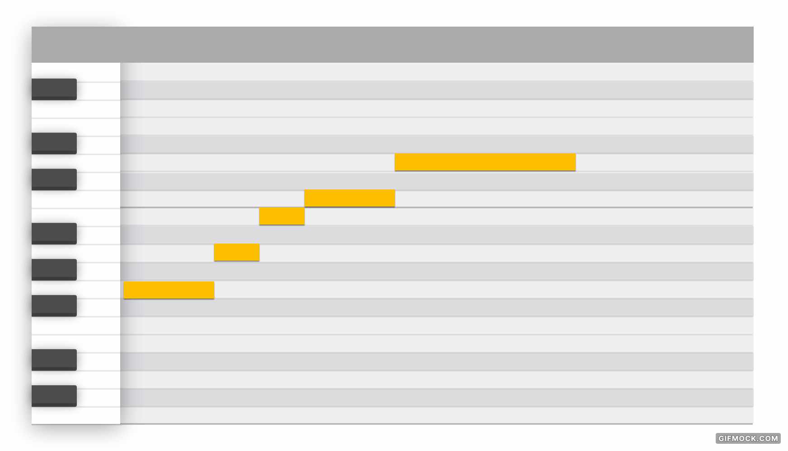

在过去的两次学习中，我们掌握了“动机”以及“级进与跳进”等旋律构成的核心基础。从本讲开始，我们终于要切入旋律中每一个单音的固有性质这一微观世界了。

但在正式起跑之前，我们必须先厘清一件极其重要的事情——那就是音符的“称谓”问题。
 1. 相对调性的称谓
1. 相对调性的称谓
如果有人问你：“在旋律中使用 Do 音，会产生怎样的艺术效果？”，这个问题在专业乐理中其实是无法直接回答的。因为在不同的调性（Key）下，其答案有着天壤之别。

例如在 C 大调中，C 音（Do）是无可争议的中心音（主音），我们可以解释为“它是让乐句稳稳着陆、带来尘埃落定般终结感的最佳落点”。但在 F 大调中，C 音所处的地位就完全变了样。

在某个组织中是一把手，到了另一个组织里可能就只是个普通骨干。音乐中的音符也是如此充满流动的相对性。进一步地，如果调号有两个以上的升号（如 D 大调），音阶的常驻成员变成了 C♯，原初的 C 音（还原 C）出场的机会就会暴跌。

归根结底，音乐理论始终是以“调性”为先决前提的。在剖析旋律各个音所具备的音响心理效应时，其绝对物理振动频率的高低往往无关紧要；相较之下，它是“中心”、还是“中心下方相邻的那个音”，这种相对于调性中心的相对位置关系才是至关重要的灵魂所在。 例如在 KTV 唱歌时，为了让自己更容易唱上去，我们经常会把伴奏升高或降低几个 Key。尽管物理音高变了，但旋律所蕴含的喜怒哀乐与内在叙事丝毫不会发生任何改变。

这就是所谓“绝对音高并非核心关键”的真谛所在。因此在深入探讨旋律机理时，我们迫切需要一种相对于调性的音级称谓体系。 例如“中心音（主音）”就是一个典型的相对称谓。在 F 大调中 F 是中心音，在 D 大调中 D 是中心音。无论在哪个调中，它始终专指统领全调的领袖之音。 正因为有了这种相对称谓，我们才能总结出“乐句终结在中心音上便会产生强烈的解决与稳定感”这样放之四海而皆准的普遍法则。顺理成章地，为调性中的每一个音赋予其相对称谓，正是本讲的核心主旨。
2. 音度（Scale Degree）
最纯粹直接的相对命名方式，莫过于直接使用数字（音度）。

为了与普通节拍数字区分开来，乐理中通常采用罗马数字（如 I、II、III……），或者在阿拉伯数字上方添加尖帽记号（如 $\hat{1}$、$\hat{2}$、$\hat{3}$……）。这种标注在音阶上的数字被称为音度（Scale Degree / 音级）。 作为对照，我们来看看在其他调性中的情况：

如此一来，我们只需表述为“第 IV 级音”或“IV 度音”，便能完全超脱具体调性的束缚，在抽象而普适的理论维度自如研讨。 不过，这种数字记法虽然在书面视觉上简练直观，但在口头唱读或哼唱时难免略显干瘪冗长。
3. 基于位置与职能的传统命名
除了数字，传统乐理中还存在一套基于音符在调性中所处几何位置与和声职能的经典命名体系。以自然大调音阶为例，各音级的称谓如下：

作为全调领袖所以叫“主音”；位于主音正上方所以叫“上主音”……每个称谓背后都承载着严谨的历史渊源。其中英对照如下：
| 中文（汉字名） | 英语名称 | 音译 / 别称 |
|---|---|---|
| 主音 | Tonic | 主音（第 I 级） |
| 上主音 | Supertonic | 超主音（第 II 级） |
| 中音 | Mediant | 中音（第 III 级，介于主音与属音正中） |
| 下属音 | Subdominant | 下属音（第 IV 级，主音下方五度 / 上方四度） |
| 属音 | Dominant | 属音（第 V 级，主音上方五度，最具统治力） |
| 下中音 | Submediant | 下中音（第 VI 级，介于下属音与上方主音正中） |
| 导音 | Leading Tone | 导音（第 VII 级，强烈倾向并导向主音） |
这套命名体系充满深厚的学术底蕴，主要广泛活跃于专业严肃音乐文献，特别是传统古典和声学中。与数字相比，它的优势在于哪怕脱离任何上下文，任何人一听便知这是“指代单音相对地位的术语”；但其劣势在于记忆门槛偏高[14]。
小调音阶的情况
前文均以大调为例，在自然小调音阶中，绝大部分命名逻辑完全通用。唯独有一处例外：由于小调第七级与上方主音相距而非，失去了强烈的导向性，因此不称作“导音（Leading Tone）”，而被称为下主音（Subtonic）。

这种细节规则确实略显繁琐琐碎。
4. 阶名与首调唱名法（Sol-fa）
虽然介绍了上述各种称谓，但若单纯从“探讨歌唱与旋律线条”的视角来看，它们在实操中都未免过于冗长拗口。例如要把“Do Re Mi Fa Mi Re Do”的旋律口诵表达出来，若必须念成“I - II - III - IV - III - II - I”或者“主音-上主音-中音-下属音-中音-上主音-主音”，简直是一场灾难。 重新审视我们自幼熟悉的“Do、Re、Mi、Fa、Sol、La、Ti”，你会发现它们简直是造物主的奇迹：每一个音符都是清脆短促的单音节，发音极其顺畅，同时散发着让人倍感亲切的个性魅力。

于是，一种极具实用智慧的伟大方法论应运而生：我们何不直接将“Do Re Mi”作为相对调性的代名词来使用呢？！ 换言之，用这套充满生命力的“Do Re Mi”全面替代冷冰冰的 1、2、3…… 数字。

无论身处哪个调性，一律将该调的领袖核心音唱作“Do”——这就是首调唱名体系（Movable-Do）。彻底抛弃“Do Re Mi 绑定在键盘具体白键物理位置”的刻板观念，将其纯粹作为象征调内阶梯顺位（第 1 级、第 2 级……）的符号工具来驾驭。 上面的 G 大调乐谱，如果按固定调来看是“Sol - La - Ti - Do - Re - Mi - Fa♯”，而在首调体系中，我们大大方方地将其唱读为“Do - Re - Mi - Fa - Sol - La - Ti”。 再看另一个调性的例子：

在 F 大调乐谱中，我们不再繁琐地念作“Fa - Sol - La - B♭ - Do - Re - Mi”，同样行云流水地唱作“Do - Re - Mi - Fa - Sol - La - Ti”。 换种表述方式：这套体系相当于在任何调性中，都用一种“如果把它平移换算成 C 大调会是怎样？”的相对透镜来解构乐谱。
习惯用 ABC 字母表示物理音名
初学者刚接触这一体系时，难免会有一阵思维打架：“明明是键盘上的 Sol 音，为什么非要逼我唱成 Do？明明是 Fa 为什么叫 Do？” 然而，英美体系的音乐人却几乎从未因此产生过困扰。因为在他们的日常习惯中，指代键盘绝对物理位置时自始至终使用的是 A、B、C、D、E、F、G 字母音名。

在他们的世界里，绝对物理音高叫 CDEFGAB，而 Do Re Mi 本就是一套“现成闲置、极为动听的相对音节”。将它们拿来专职充当相对唱名，是最自然不过的理性选择[15]。 对于习惯了把 Do 等同于 C 键的亚洲学习者来说，确实需要短暂的适应期。但仔细想想，用“G 大调、主音是 Sol、和弦是 G”这种中英日意杂糅的三套语言乱炖，在底层逻辑上确实非常别扭。 因此，在 SoundQuest 体系中，我们倡导大家逐步习惯用利落的 ABC 字母来精准指代绝对物理音名，而将朗朗上口、充满歌唱性的 Do Re Mi 专用于指代相对阶名。
术语辨析：音名与阶名
- 音名（Pitch Name）：指代绝对物理振动频率与键盘具体琴键位置的专有名称（如 C、D、E 或升降记号）。
- 阶名（Syllable / 首调唱名）：指代在特定调性内部相对主干顺位位置的唱名代号（Do、Re、Mi 等）。在英语中这套系统被称为 Sol-fa（首调唱名法）。
小调中的阶名指派（以 La 为中心）
遇到小调时，我们顺应关系大小调的自然规律，以 A 小调为镜像，将小调的核心领袖音统一定为“La”。

因此，前文所谓“无论何调都把领头人叫 Do”需要做严谨的修正：准确地说是“大调领袖唱作 Do，小调领袖唱作 La”[16]。 再看一个 C 小调的范例：

尽管初上手可能需要打破以往习惯，但这绝对是一道值得跨越的理论认知分水岭。
5. 视角不同，所见之景迥异
使用“固定音名”与“首调阶名”，我们在旋律中所捕捉到的核心信息维度是完全不同的：
阶名（首调唱名）视角的歌唱
音名（固定音高）视角的歌唱
这是一个极为经典的对照实验：我们将“Do-Re-Mi-Fa-Sol-Fa-Mi-Re-Do”这段乐句，先在 C 大调上演奏，随后移调到 D 大调，再移调到 E 大调，每轮全音上行。
- 当采用首调阶名唱读时，由于每一次都牢牢以该调的中心音为 Do，唱词自始至终是完全一样的优美循环。
- 而当采用固定音名唱读时，随着绝对高度一路走高，所念出的词汇每一轮都在剧烈变换（C-D-E-F... → D-E-F#-G...）[17]。
用首调阶名去观察，你可能会弱化对“整首歌正在频繁升降调”这一物理事实的敏感度；但相反，你能无比清晰锋利地看穿本相——“尽管物理调性不同，但乐句所承载的音乐语法、内在动势与情感意义自始至终百分之百完全相同！” 所谓乐句的内在意义，就是“从中心音出发逐步平稳攀升，抵达峰值后顺滑折返归巢”这一横向动势信息。 而固定音名恰好相反：虽然忠实呈现了高度的变迁，却将“其实一直在重复完全相同的艺术构型”这一本质深埋在纷繁复杂的字母变幻之下。 旋律理论的核心使命，正是为了挖掘“为什么这两首作品调性各异，却运用了完全一致的旋律神韵”。因此，在面对旋律时，乐句动势的相对意义远比绝对物理音高更为重要。这就是为什么我们将好唱好记的“Do Re Mi”赋予最宝贵的相对阶名，而用 ABC 去规范绝对音名。
磨砺你的“相对音感”
使用相对阶名去解构旋律，能够直接在实战中淬炼你的相对音感（Relative Pitch）。 所谓相对音感，指的是：乐句何时真正降落尘埃落定在中心音上，你的耳朵能瞬间捕捉；音符何时发生了跳进，跳进了几度音程，你的心头能立刻明晰映照。这种内省的听觉灵敏度，直接关乎你在实际创作旋律时的审美敏锐度与高级感。 希望大家在后续旋律篇的学习中，逐步习惯这套透视音乐灵魂的阶名体系。
总结
- 除了标定绝对物理音高的音名之外，存在一套专门标定音符在调性中相对阶梯顺位的“相对称谓”。
- 将音阶成员赋予数字编号，称为音度（Scale Degree / 音级）。
- 将“Do Re Mi”彻底脱离键盘物理白键位置、专门作为调内相对位置坐标来使用的体系，称为阶名（首调唱名）。
- 无论是借助音度还是阶名，只要学会从“相对调性”的宏观视点来洞察旋律，不仅扒谱与分析效率会产生质的飞跃，更是全面打磨自身相对音感的最强利器。